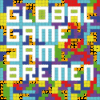
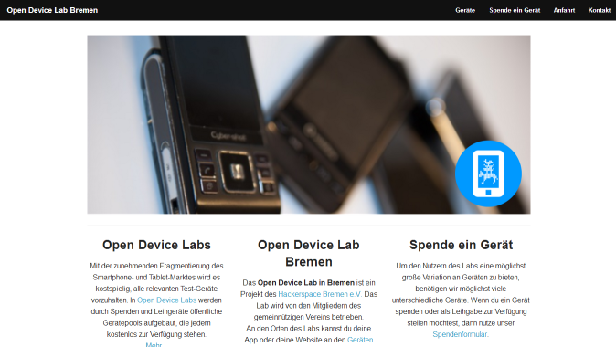

Hinweis
Bei dieser Veranstaltung werden Foto-, Ton- und Videoaufnahmen gemacht und im Internet veröffentlicht!
Mit der Teilnahme erklärt ihr euch damit einverstanden!


Sponsoren


Veranstaltungen in Bremen
Global Game Jam Bremen 2014
Datum: So, 24. - 26. Januar 2014
Ort: Universität Bremen
Facebook-Seite der Veranstaltung

Usergroups in Bremen (1/2)
- Linux UG Bremen
- Trifft sich jeden Sonntag 19 Uhr
- Treffen finden im Hackerspace Bremen e.V. statt
- Java User Group Bremen
- Nächstes Treffen: 14. Januar 2014
- Treffpunkt steht noch nicht fest. Siehe Kalender der JUG Bremen
- CocoaHeads Bremen
- Treffen sich immer am 3. Montag im Monat
- Nächstes Treffen: 20. Januar 2014
- Treffen finden im Hackerspace Bremen e.V. statt
Usergroups in Bremen (2/2)
- Webmontag Bremen
- Nächstes Treffen: 20. Januar 2014
- Treffen finden in der alten Schnapsfabrik statt.
- OSM Bremen
- Treffen sich immer am 4. Montag im Monat
- Nächstes Treffen: 27. Januar 2014
- Treffen finden im Hackerspace Bremen e.V. statt
Open Device Lab Bremen
- Das Open Device Lab in Bremen ist ein Projekt des Hackerspace Bremen e.V.
- An den Orten des Labs kannst du deine App oder deine Website an den Geräten des Labs ausprobieren.
- Hier geht es zur Website

#techroundup
Zukünftige GDG Events
Nächster GDG Bremen Stammtisch
3. Februar 2014
Es stehen noch keine Themen fest!
Wenn ihr einen Vortrag über ein Google-nahes-Thema habt, würden wir uns sehr freuen.
Jeder Vortrag ist willkommen!
Droidcon Berlin
8. - 10. Mai 2014
- Vorträge können bis 10. März eingereicht werden
- Noch keine Anmeldung möglich
- Neuigkeiten erfahrt ihr auf Google+ und von uns!
Heute
27. Stammtisch
- Google Cloud Endpoints von +Steve Liedtke
- Offene Diskussionsrunde
- Grillen ?!
Viel Spaß beim Stammtisch!
- Unsere Website
- Code Repository auf Google Code
- Code Repositories auf Github
- +GDG Bremen
- @GDGBremen
- GDG Bremen at Facebook